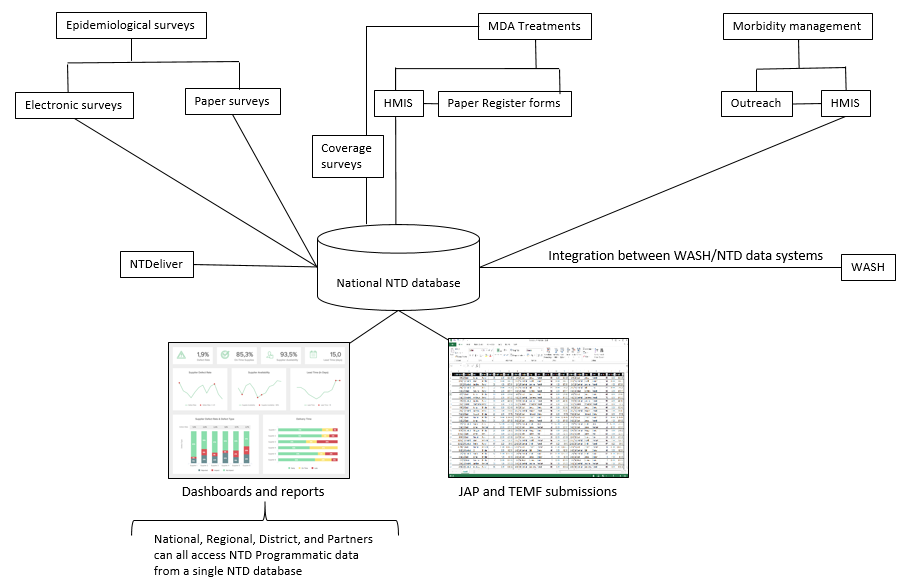

Administrator Guide
Introduction
What is the NTD DHIS2 database?!
The NTD DHIS2 database is a national NTD database that can be accessed by authorized Ministry of Health users and Partners by going to here. The NTD DHIS2 database uses DHIS2 DHIS2 software as a data warehouse that integrates with external systems to provide one single source for all NTD programmatic data (Image 1). Under this model, no data is entered into the NTD DHIS2 database directly, rather, the data come from integrations with a wide range of external systems. Such as:
Epidemiological surveys - Tropical Data, ESPEN Collect, EPHI
MDA Treatments - HMIS indicators
Stock - PFSA?
Morbidity management - HMIS indicators
Drug procurement tracking - NTDeliver
WASH - mWater

NTD DHIS2 database vs HMIS?
The national Health Management Information System (HMIS) is a data collection system designed to collect key health indicators from health facilities across the country on a wide range of health conditionals in order to support planning, management, and decision-making.
The NTD DHIS2 database is a data warehouse that connects to a wide range of external databases to create a single data repository of all NTD programmatic data in Ethiopia. Some data, such as the routine reporting of MDA treatments and morbidity management come through HMIS facility-based reporting. Other data, such as the event data associated with epidemiological surveys, comes through integration with global systems, such as Tropical Data, or through national systems, such as electronic data collection tools implemented by the Ethiopia Public Health Institute (EPHI). All together, these NTD data allow the NTD program to plan, manage, and report on NTD control and elimination programming.
Note
To learn more about the DHIS2 data model click here.
Getting Started
Hosting
The NTD DHIS2 Database1 for Ethiopia is currently hosted by BAO Systems2, a leading DHIS2 cloud hosting provider. BAO Systems provides nightly backups of the database and server administration support for server upgrades and is managed through their management portal (see Figure 1 below). The monthly fees for this service are billed annually at $144/month. The current service contract with BAO Systems expired on November 30th, 2020. If necessary, moving this database to another cloud hosting provider or even an on-premise server within the FMOH is possible with the support of a DHIS2 server administrator.
Data model
The NTD DHIS2 data model consists of 11 datasets
Dataset Name |
Description |
Data Collection Period |
Organization Unit Level |
|---|---|---|---|
ESPEN Forecast |
Impact Assessment forecasts and MDA forecasts at the district level populated from the ESPEN Portal. |
Annual |
Woreda |
Implementation Partners |
Implementation partners fro NTD, MDA and WASH |
Annual |
Woreda |
Integrated NTD Reporting Form |
The FMOH reporting form for tracking NTD across the 5 PC NTDs |
Annual |
Woreda |
Integrated NTD Reporting Form (Pre 2018) |
The FMOH reporting form for tracking NTD across the 5 PC NTDs used prior to 2018 |
Monthly |
Woreda |
Joint Reporting Form (JRF) |
Treatment data across drug packages used for WHO reporting |
Annual |
Woreda |
Joint Request for Select Medicines (JRSM) |
Treatment planning across drug packaged used for WHO reporting |
Annual |
Woreda |
LF Morbidity Management and Disability Prevention |
Country level MMDP summary statistics for Lymphedema and Hydrocele |
Annual |
Country |
National Demographics |
National annual projection percentages for population growth and presac/sac and adult population percentages |
Annual |
Country |
Sanitation Microplanning |
Sanitation microplanning data supported by UNICEF |
Annual |
Woreda |
Trachoma Data |
Survey statistics and Treatment data fro Trachoma used for IT reporting. |
Annual |
Woreda |
Tropical Data |
Survey statistics and Treatment data fro Trachoma used for IT reporting imported from Tropical Data |
Annual |
Woreda |
User Roles
There are currently 4 types of users in the system including National Data Manager, Regional Data Manager. These roles for the NTD Database for DHIS2 are based on the recommendations for user management in a health system.
Role |
Tasks |
Configuration |
|---|---|---|
National Data Manager |
Review data across all regions |
Data capture and maintenance organization units in the user’s profile set to country level |
Regional Data Manager |
Review data across one region |
Data capture and maintenance organization units in the user’s profile set to a specific regional level |
District Data Officer |
Enters data across one region |
Data capture and maintenance organization units in the user’s profile set to district level |
System Administrator |
Edit Metadata |
Data capture and maintenance organization units in the user’s profile set to country level |
Metadata Download
There are two metadata packages to support the basic configuration offered in this the NTD Database
Package Name |
DHIS2 Version |
Package Version |
Metadata |
Updated |
|---|---|---|---|---|
ESPEN Forecast |
2.35.10 |
V1.0 |
18 May 2022 |
Data Import
The NTD Database supports data import from several different data sources including Microsoft Excel, Tropical Data, ESPEN Portal, and NTD Deliever.
Microsoft Excel
Using the Data Import Wizard app, this annual JRF, EPIRF, JRSM, TEMF, and WASH Excel workbook can be imported directly into the database.
File |
Dataset/Program |
Mapping Name |
Example Import |
|---|---|---|---|
Joint Request Form |
Joint Reporting Form |
Joint Reporting Form |
|
EPIRF |
LF Morbidity management and disability prevention |
EPIRF LF Morbidity - All Years |
|
JRSM |
Joint Request for Select Medicines |
Joint Request for Select Medicines |
|
TEMF |
Trachoma Data |
Trachoma Elimination Monitoring Form (TEMF) |
|
Unicef Sanitation Microplanning |
Sanitation Microplanning |
Sanitary Microplanning at the Woreda Level |
|
STH |
ESPEN STH EPI RF |
STH Survey Import from ESPEN |
|
SCH |
ESPEN SCH EPI RF |
SCH Survey Import from ESPEN |
If it’s not already, install the Data Import Prepare the import file. All imported data need to conform to the value type of each data element. For example, data elements defined as Integers should be whole numbers.
Create the Mapping. In DHIS2, navigate to the Data Import Wizard and select Aggregate from the menu and click on the appropriate mapping for the file type being imported. When prompted for an import file, sel
Review the import data and Import Summary screen and make corrections to the mapping or the data import file as needed.
Tropical Data
Tropical Data is an online database of Trachoma survey data started by the Global Trachoma Mapping Project (GTMP). The NTD DHIS2 database pulls data from Tropical Data. This process works by executing a script which exports data using the Tropical Data API and then transforms it into a file that can be imported. This script and its documentation can be found here in NTD DHIS2 database code repository.
WHO ESPEN Portal
The ESPEN Portal is an electronic platform designed to enable health ministries and stakeholders to share, and exchange subnational program data, in support of the NTD control and elimination goals. The Expanded Special Project for Elimination of Neglected Tropical Diseases (ESPEN) was established as a partnership between WHO Regional Office for Africa (AFRO), the Member States and NTD partners The NTD DHIS2 database pulls data from ESPEN Portal. This process works by executing a script which exports data using the ESPEN Portal API and then transforms it into a file that can be imported. This script and its documentation can be found here in the NTD DHIS2 database code repository.
NTDeliver
NTDeliver is an online platform that centralizes and coordinates information from a variety of sources to better monitor and evaluate the NTD supply chain. The NTD DHIS2 database provides a view to the NTDeliver country summary report with a link provided on the Reports dashboard.
Questions
For questions on the DHIS2 for NTD, please post visit the DHIS2 Community of Practice.